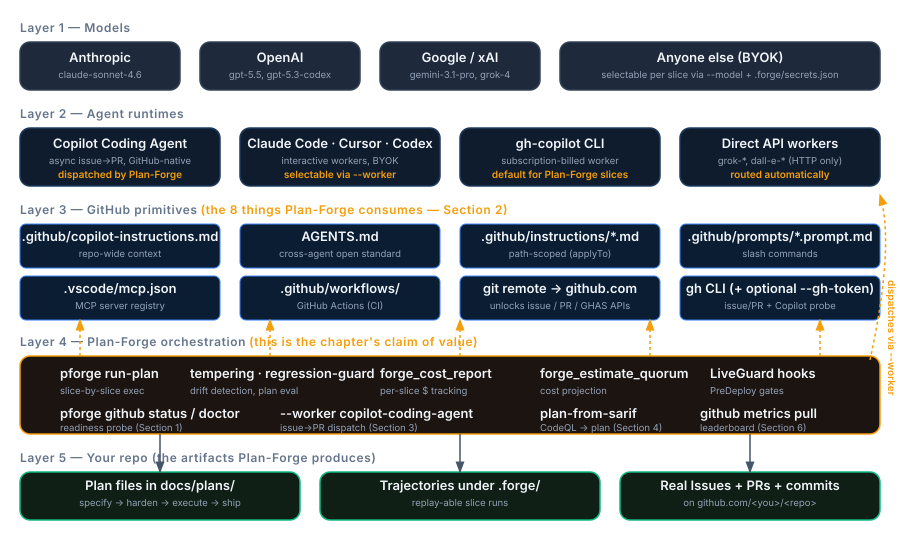
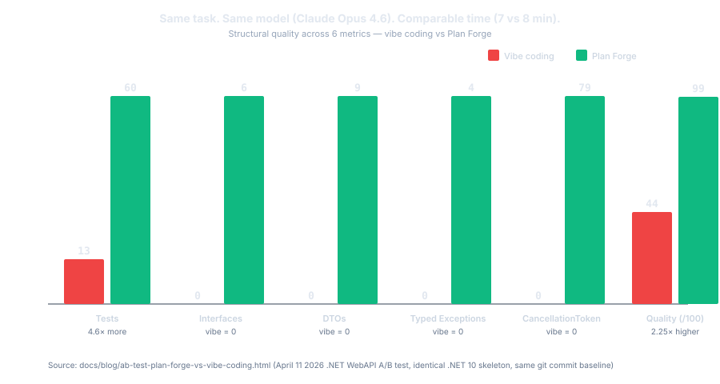

What Is Plan Forge?
The AI-Native SDLC Forge Shop. One workshop, four stations, every phase of the lifecycle.
Plan Forge is the orchestration harness that sits on top of GitHub Copilot (and other AI coding tools). It does not replace your model or your IDE, it adds the SDLC layer GitHub deliberately leaves to the ecosystem: planning, validation gates, memory, cost control, and reviewer separation.
It is also licensed MIT because your SDLC is yours, and your institutional memory lives in OpenBrain, a user-owned service, because your accumulated decisions should not be trapped inside any one AI vendor.

The One-Line Answer
Plan Forge is a complete AI-native SDLC workshop. Instead of giving your AI agent a single code-generation step, it gives the agent a whole shop, four specialized stations (Smelt, Forge, Guard, Learn) connected by gates, telemetry, and persistent memory.
"A blacksmith without a shop is just a hammer in a hand."
- Plan, a Markdown file in
docs/plans/describing one feature: what to build, what files it can touch, what tests must pass. - Slice, one numbered step inside a plan. Plans are broken into 3–7 slices so the AI works in checkpointed chunks instead of one giant edit.
- Scope contract, the section of the plan that lists exactly which files are in-scope vs out-of-scope vs forbidden. The orchestrator enforces it: edits outside scope are blocked.
- Validation gate, a concrete shell command (e.g.,
dotnet test) that must pass before the next slice runs. Gates are how Plan Forge knows the AI didn't break anything. - Hardened plan, a plan that has gone through Step 2 of the pipeline (Plan Hardener), which adds the scope contract, validation gates, forbidden actions, and rollback steps. Plans the AI can execute autonomously must be hardened.
All five terms have full entries in the Glossary.
The Four Stations
Every station handles one phase of the software lifecycle. Every station is AI-run and human-supervised.
| Station | Phase | What runs here | What comes out |
|---|---|---|---|
| 🪨 Smelt | Intake → scope contract | Specifier agent, hardening runbook, /specify, /harden-plan, Project Principles |
A Scope Contract the Forge can execute without follow-up questions |
| 🔨 Forge | Scope contract → shipped code | pforge run-plan, slice gates, quorum mode, auto-escalation, cost ledger |
Green tests, green CI, green cost ledger, or an honest stop with a fix proposal |
| 🛡️ Guard | Post-deploy defense (LiveGuard) | Secret scan, env drift, regression guard, incident triage, fix proposals | Pre-deploy block on severity ≥ high, post-slice drift advisory, triaged incidents |
| 🧠 Learn | Memory & retrospectives | OpenBrain, bug registry, testbed findings, Health DNA, Forge Intelligence | Tomorrow's plan is colder, faster, and less wrong |
The Problem This Solves
AI coding agents are powerful but directionless.
They generate code fast. But fast isn't the same as good. Without a full shop around them, without scope contracts, slice gates, post-deploy guards, and institutional memory, AI-generated code tends to be untestable, insecure, architecturally inconsistent, and impossible to maintain at scale. That's fine for prototypes; it's not fine for production systems.
The 80/20 Wall — The Problem Plan Forge Solves
You've probably lived this pattern:
You fire up an AI agent, Copilot, Cursor, Claude, whatever, and describe the app you want. The first 80% is magic. Files appear, components wire up, the database schema materializes. You're shipping faster than you ever thought possible.
Then complexity creeps in. Auth flows interact with database queries. Middleware chains get long. The agent still works, but you notice it's making assumptions without asking, it picked a caching strategy you wouldn't have chosen, refactored code from three sessions ago that was working fine.
Then the wall. Every change breaks something else. Fix the auth bug, break the dashboard. Fix the dashboard, break the API response format. The agent is confidently producing code that compiles but doesn't work. You're debugging AI-generated code you don't fully understand, in an architecture you didn't fully choose.
The pattern everyone hits: prompt → hope → fix → re-prompt → hope harder.
The four-phase trajectory
Plotted as completion vs. confidence, the failure mode is consistent across teams and tools:
- 0 → 50% (greenfield rush), Empty repo, clear scope, every prompt produces working code. Confidence is high; the codebase has no constraints to violate yet.
- 50 → 80% (complexity creeps), The agent starts making undiscussed architectural decisions. Caching strategy, error-handling pattern, schema shape, all chosen mid-stream. Most still works, but the codebase now has invisible commitments the agent doesn't track.
- 80% → the wall (every change breaks something), Each fix introduces a regression somewhere else. The agent's previous decisions become constraints on its current decisions, but it doesn't remember them. You spend more time debugging than building.
- 100% (maybe just start over), The codebase is structurally tangled in ways the agent can't unwind. Many teams quietly restart from scratch, cheaper than fixing the architectural debt.
The fix is the full shop: Smelt before the agent writes a line of code, Forge the scope so it can't drift, Guard what ships, and Learn with a memory that carries decisions forward.
Vibe coding gets you a prototype. Plan Forge gets you a product.
Longer narrative version with the failure stories: The 80/20 Wall: Why AI Agents Break What They Build.
The core pipeline (prompts, instructions, agents) is free, it works with your existing Copilot subscription. Automated execution (
pforge run-plan) and quorum mode use your IDE's AI model, consuming premium requests.
Direct API providers (xAI Grok, OpenAI) require API keys and are billed per-token.
The Dashboard's Cost tab tracks every dollar.
What Happens Without the Shop
- ✗Prompt → hope → fix → re-prompt
- ✗Agent picks architecture mid-stream
- ✗Every session starts from zero
- ✗Agent reviews its own work
- ✗"It compiles" = "it's done"
- ✗Secrets + CVEs ship to prod unnoticed
- ✓Smelt: Scope contract locked before coding
- ✓Forge: Slice gates, build + test at every boundary
- ✓Forge: Fresh session audits independently
- ✓Guard: Secrets + drift + regressions caught pre-deploy
- ✓Learn: Memory carries decisions across sessions
- ✓Learn: Bug registry + testbed + health DNA feed the next plan
Without the shop, AI coding agents:
If you've managed human dev teams, you know guardrails aren't about distrust, they're about consistency. The same principle applies when your team members are AI models.
- Silently expand scope, "I'll also add..." (you didn't ask for that)
- Make undiscussed decisions, picks a database pattern without telling you
- Skip validation, ships code that doesn't build or pass tests
- Lose context, forgets requirements halfway through long sessions
- Never self-audit, the executor grades its own exam
- Have no post-deploy defense, secrets, drift, and regressions land in prod unseen
These problems get worse the less technical your team is, you may not even notice the drift until it's too late.
| Without the shop | With Plan Forge |
|---|---|
| Agent writes code that passes once, breaks in production | Code follows your architecture from the first line (Smelt) |
| 30–50% of AI-generated code needs rework after review | Independent review catches drift before merge (Forge) |
| Agent re-discovers solved problems every session | Persistent memory loads prior decisions in seconds (Learn) |
| Secrets and CVEs slip into deploys | LiveGuard blocks pre-deploy on severity ≥ high (Guard) |
| Context window wasted on exploration and backtracking | Hardened plan tells the agent exactly what to build |
| "It works on my machine" shipped to staging | Validation gates pass at every slice boundary |
What Plan Forge Does
Plan Forge is an AI-native SDLC workshop, four stations connected by gates, telemetry, and memory, that converts your rough ideas into shipped, defended, remembered software. It installs guardrail files, MCP tools, reviewer agents, and a live dashboard into your project so every AI edit happens inside the shop, not next to it.
The Blacksmith Analogy, Extended
A blacksmith doesn't hand raw iron to a customer. They heat it, hammer it, temper it, and, in a real shop, the master smith watches it ship, remembers which blades broke, and sharpens the process for next time.
Plan Forge does the same for your development plans:
| Shop Stage | Station | What Happens |
|---|---|---|
| 🔥 Heat, raw ore | Smelt | You describe what you want; the Specifier agent extracts a Scope Contract |
| 🔨 Hammer, shape it | Forge | Plan broken into slices with validation gates; AI builds slice-by-slice |
| 💧 Quench, check the edge | Forge | Fresh-session review audits for drift, completeness, quality |
| 🛡️ Guard, patrol the floor | Guard | LiveGuard scans secrets, drift, regressions, CVEs pre- and post-deploy |
| 🧠 Remember, sharpen the process | Learn | Every incident, fix, and review feeds OpenBrain memory + bug registry + Health DNA |
Who This Is For
Solo Developers
You're using Copilot or Claude to build features, but you've noticed the AI drifts when sessions get long. You spend time re-explaining your patterns. Plan Forge gives you a repeatable pipeline that remembers your standards, validates at every step, and catches the mistakes you'd normally catch in code review, except there's no reviewer. You are the team.
Development Teams
Your team uses AI tools but everyone gets different quality results. Junior devs get code that works but violates your architecture. Senior devs spend review cycles catching AI-generated antipatterns. Plan Forge makes the architecture the default, instruction files load automatically, validation gates enforce build+test, and the reviewer-gate agent catches drift before anyone opens a PR.
Enterprise & Regulated Environments
You need audit trails, consistent architecture, and code that meets compliance standards. Plan Forge gives you phase-level tracking (DEPLOYMENT-ROADMAP.md), per-slice cost accounting, OTLP telemetry, and 19 independent reviewer agents, including compliance, security, and multi-tenancy auditors that run automatically. Every execution has a trace.
Plan Forge Is / Plan Forge Is Not
Positioning matters more than features when an entire category is in motion. The shortest answer is paired: what Plan Forge claims to be, and the closest things it deliberately is not.
| Plan Forge is | Plan Forge is not |
|---|---|
| The orchestration harness that sits on top of GitHub Copilot (and other AI coding tools). | An AI model. Plan Forge works with whatever AI you already use, Copilot, Claude, Cursor, Codex, Gemini, Windsurf, or any tool that accepts text prompts. |
| The SDLC layer GitHub deliberately leaves to the ecosystem: planning, validation gates, memory, cost control, and reviewer separation. | A code generator. Plan Forge doesn't write your code, it tells the AI how to write it, then verifies the result. |
| Opinionated about software shape (interfaces, DTOs, typed exceptions, tests), see the 99-vs-44 evidence below. | Opinionated about your stack. Nine presets cover .NET, TypeScript, Python, Java, Go, Swift, Rust, PHP, and Azure IaC. Each installs stack-appropriate guardrails. |
| MIT-licensed because your SDLC is yours. | A managed cloud service or a process you rent. Plan Forge runs entirely inside your existing IDE, CLI, and repo. |
| Tied to your repo's source of truth via GitHub Issues, PRs, and Actions, Plan Forge writes to the artifacts you already audit. | A CI/CD system. It doesn't deploy your app. It validates that what's built matches what was planned. Your CI pipeline is a separate concern. |
| Designed so your institutional memory lives in OpenBrain, a user-owned service, because your accumulated decisions should not be trapped inside any one AI vendor. | A project manager. It doesn't assign tasks to humans or track sprints. It structures work for AI agents, slices, gates, scope contracts. |
Evidence — A/B Test Results
The shop story is testable. The April 2026 .NET A/B test built the same WebAPI twice from an identical .NET 10 skeleton (same git commit baseline) using the same model (Claude Opus 4.6) on the same machine. One run used Plan Forge guardrails; the other used pure vibe coding. Comparable wall-clock time, 7 minutes for Plan Forge, 8 minutes for vibe coding (the extra minute went to fighting build errors).

| Metric | Vibe coding | Plan Forge | Delta |
|---|---|---|---|
| Tests | 13 | 60 | 4.6× more |
| Interfaces | 0 | 6 | vibe = 0 |
| DTOs | 0 | 9 | vibe = 0 |
| Typed exceptions | 0 | 4 | vibe = 0 |
| CancellationToken references | 0 | 79 | vibe = 0 |
| Quality score (/100) | 44 | 99 | 2.25× higher |
| Build time | 8 min | 7 min | guardrails didn't add overhead |
The vibe run spent its extra minute fighting build errors caused by an EF Core InMemory misconfiguration that the model had to diagnose, backtrack, and fix at the cost of sacrificing a requirement (banker's rounding). That rework cycle is invisible in a demo; at scale it is the dominant cost.
Full A/B test write-up with code samples, methodology, and links to both repositories: The A/B Test: 99 vs 44 — Same App, Same Model, Same Time.
How to Read This Manual
This manual follows the four stations of the shop:
- Act I: Smelt (Chapters 1–5): What Plan Forge is, how the shop works, installation, writing plans, and the Crucible for community-contributed ideas. Start here if you're new.
- Act II: Forge (Chapters 6–15): Hands-on building, your first plan, the dashboard, CLI, customization, instructions & agents, MCP tools, extensions, multi-agent, advanced execution, troubleshooting.
- Act III: Guard (Chapters 16–20): LiveGuard mental model, all 14 tools, and the dashboard, plus the Watcher (read-only tail of another project's run) and the Remote Bridge (phone-friendly approvals via Telegram, Slack, Discord, OpenClaw).
- Act IV: Learn (Chapters 21–24): The Bug Registry, the Testbed, Health DNA, and three-tier memory architecture, how the shop remembers.
📄 Full reference: README on GitHub